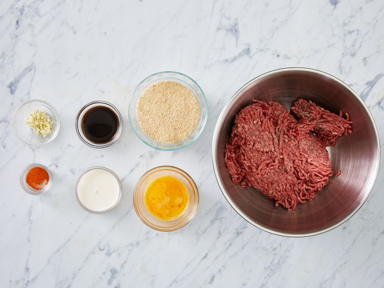
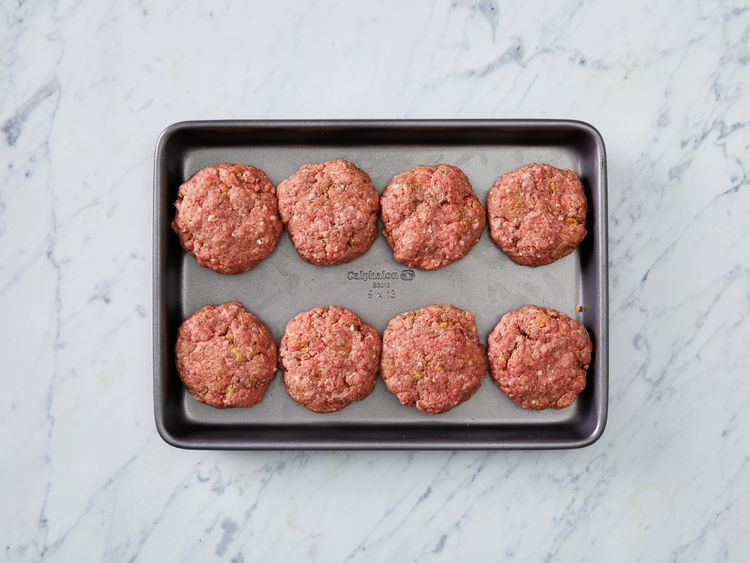

No more dry, lackluster hamburgers. These are juicy, and spices can be easily added or changed to suit anyone's taste. If you find the meat mixture too mushy, just add more bread crumbs until it forms patties that hold their shape.
This aptly named hamburger recipe uses evaporated milk, eggs, and bread crumbs to create incredibly juicy and flavorful hamburger patties that will rival your favorite burger joint.
To make hamburger patties, just mix the ground beef, egg, bread crumbs, evaporated milk, and spices and seasonings in a bowl using your hands.
The best way to season hamburger patties depends on personal taste. This top-rated recipe is seasoned with Worcestershire sauce, cayenne pepper, and garlic. But you can get creative with what's in your spice cabinet — they're your burgers, after all.
It couldn't be easier to grill hamburger patties! You'll find the full recipe below, but here's a brief overview of what you can expect: Prepare the grill grate by cleaning it and brushing it lightly with oil. Heat a charcoal or gas grill to medium-high heat, then grill the patties on each side (the length of time depends on the level of doneness you're after). If you're making cheeseburgers, add a slice of cheese about a minute before the burger is finished.
Hamburger patties are done when a food thermometer inserted into the center reaches 160 degrees F.
The only way to ensure that illness-causing bacteria has been destroyed is to make sure a food thermometer inserted into the center of the meat reaches 160 degrees F. This recipe calls for about 4-5 minutes of grilling time on each side — that should get you into the safe-zone (you can use a thermometer to make sure). Rare and medium-rare burgers will be ready more quickly, but they are a bit riskier when it comes to foodborne illness.
Looking for something delicious to pair with hamburgers? We've got you covered. Try one of these traditional burger sides to make a complete, satisfying meal that's worthy of your favorite restaurant:
Let hamburger patties cool, then store in an airtight container for up to three days in the fridge. Reheat in the oven or microwave.
Absolutely! You can freeze both cooked and uncooked hamburger patties.
To freeze cooked burger patties: Wrap each patty individually in aluminum foil.
Don't wrap them together, as they're likely to stick. Place wrapped patties in a freezer-safe bag labeled with the date.
Freeze for up to three months.
To freeze uncooked burger patties: Arrange uncooked patties in a single layer on a baking sheet and cover tightly with storage wrap.
Freeze for at least a few hours or up to overnight. When the burgers are frozen, wrap them individually in foil.
Place wrapped patties in a freezer-safe bag labeled with the date. Freeze for up to three months.
Thaw frozen burgers in the fridge.
"WOW," raves Tim."What a welcome reception from my guests last night with this burger recipe!! First time I've ever put eggs or evaporated milk in burgers...well WORTH it!! Try this recipe and you'll never go back to the way you've 'always' made them!!"
"This recipe was quite good and juicy," according to one Allrecipes member. "I tried this for the first time with my in-laws and they loved the burgers. I used garlic powder instead of minced cloves and sauteed onions for some extra flavor and the taste was wonderful. Definitely a keeper."
Original recipe (1X) yields 8 servings